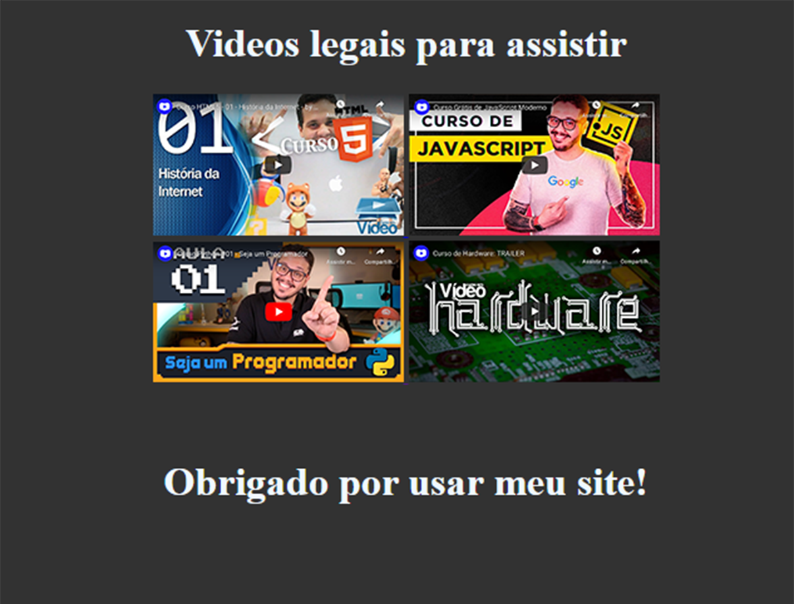
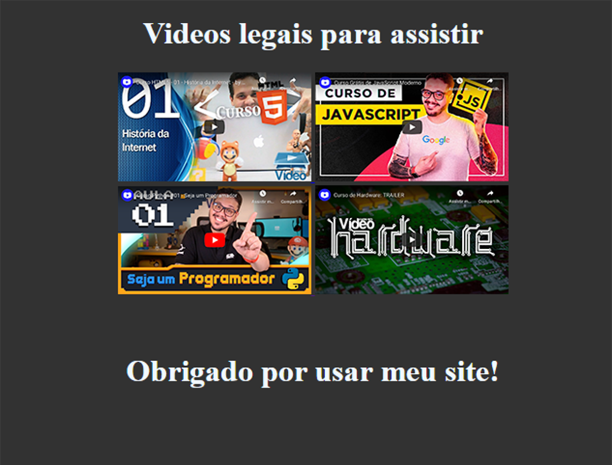

Alan Tesseroli
Desenvolvedor Júnior
Desenvolvedor Júnior
Me chamo Alan Tesseroli, nasci e cresci em uma cidadezinha no interior do estado do Paraná, chamada Palmas, posso dizer que meus principais conhecimentos se originaram da minha curiosidade em apender e necessidade de desenvolver algo diferente. Nos ultimos 2 anos venho utilizando fortemente as linguagens de programação HTML5 e CSS3, não obstante, já fui participante de olimpíadas de robótica pelo IFPR (mais informações podem ser encontradas na aba história).
Me chamo Alan Tesseroli, nasci e cresci em uma cidadezinha no interior do estado do Paraná, chamada Palmas, posso dizer que meus principais conhecimentos se originaram da minha curiosidade em apender e necessidade de desenvolver algo diferente. Nos ultimos 2 anos venho utilizando fortemente as linguagens de programação HTML5 e CSS3, não obstante, já fui participante de olimpíadas de robótica pelo IFPR (mais informações podem ser encontradas na aba história).

 
